RAGenius.
Answers that point back to the document.
By Rohith Singhu · Updated
What is RAGenius?
RAGenius is a project by Rohith Singhu, built with Python, FastAPI, FAISS, Sentence-Transformers and Streamlit. Document Q&A for people who need to check the source. Retrieves PDF passages, attaches citations, and abstains when the evidence is missing. Key result: 52/75 tasks passed in the committed evaluation.
What problem does RAGenius solve?
Finding an answer in a set of PDFs is only half the task. Readers also need to know which passage supports it, and when the system does not have enough evidence.
How does RAGenius work?
I split documents into overlapping chunks, embed them, and retrieve candidate passages with FAISS. A FastAPI service returns the answer and evidence, while a Streamlit interface makes the workflow accessible. The answering path includes citation and abstention checks.
The workflow.

View Mermaid diagram source
flowchart LR
A[PDF documents] --> B[Chunks and embeddings]
B --> C[FAISS retrieval]
C --> D{Evidence available?}
D -->|Yes| E[Answer with citations]
D -->|No| F[Abstain]The diagram above is a simplified visual summary. This Mermaid source captures the branching workflow.
A closer look.

Results, with context.
52/75 tasks passed in the committed evaluation
10/10 should-abstain tasks passed
Evaluated on a 75-task benchmark I built.
The same report records 42/65 document-Q&A tasks passing, with a 7.4-second average latency on that run.
These results come from the project README and linked artifacts.
What I learned.
The evaluation makes the tradeoff visible: citation coverage does not guarantee a useful answer. The committed report includes short-answer and keyword-miss failures, so improving answer completeness is a clearer next step than claiming the system is solved.